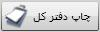
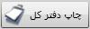
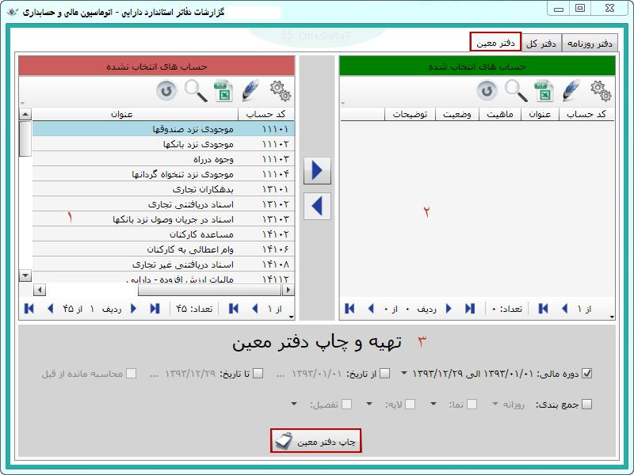

با ورود به صفحه مربوط به این منو می توانید گزارشات دفتر روزنامه، دفتر کل و معین را از سیستم بگیرید، برای این کار روی این منو کلیک کنید تا صفحه مربوط به آن باز شود.

همان طور که در شکل بالا مشاهده می کنید این صفحه دارای سه تب «دفتر روزنامه»، «دفتر کل» و «دفتر معین» می باشد که با کلیک روی هر یک از این تب ها صفحه مربوط به آن باز شده و از طریق این صفحه می توانید گزارشات مورد نیاز خود را چاپ کنید.
در این صفحه می توانید سطح و دوره مالی انتخاب کنید یا در محدوده تاریخی مشخصی که مورد نظرتان است گزارش بگیرید همچنین اگر محدوده تاریخی خاصی در نظر گرفتید، می توانید تعیین کنید که گردش حساب ها قبل از محدوده تاریخی مشخص شده نیز در گزارش دخیل باشد یا خیر. گزینه « جمع بندی» در این صفحه همانند صفحه تهیه سند خلاصه می باشد یعنی می توان گزارش دفتر روزنامه را با جمع بندی روزانه، روزانه با جزء و ماهانه تهیه کرد. با شرایط مشخص شده در شکل بالا روی گزینه « چاپ دفتر روزنامه» کلیک کنید تا شکل زیر ظاهر شود:

در شکل بالا دفتر روزنامه استاندارد تعریف شده است، می توانید آن را انتخاب کنید و یا در صورت نیاز گزارش جدیدی را خودتان طراحی کنید. (کلیک روی
 ) قسمتی از گزارش استاندارد را برای نمونه با انتخاب «پیش نمایش» مشاهده می کنید.
) قسمتی از گزارش استاندارد را برای نمونه با انتخاب «پیش نمایش» مشاهده می کنید.
برای تهیه دفتر کل روی تب آن کلیک کنید تا صفحه مربوط به آن باز شود

برای تهیه دفتر کل ابتدا حساب یا حساب هایی را که می خواهید از آنها گزارش دفتر کل را تهیه کنید از قسمت 1 انتخاب کنید(لازم به ذکر است که در این قسمت حساب هایی که دارای گردش هستند قرار می گیرند) سپس روی کلید
 کلیک کنید تا حساب های انتخاب شده به قسمت 2 منتقل شوند، در آخر از قسمت 3 روی

کلیک کنید و از صفحه زیر دفتر کل را تهیه کنید.
کلیک کنید تا حساب های انتخاب شده به قسمت 2 منتقل شوند، در آخر از قسمت 3 روی

کلیک کنید و از صفحه زیر دفتر کل را تهیه کنید.

با کلیک روی این تب صفحه ای مانند تب دفتر کل باز خواهد شد.
برای تهیه دفتر معین درست مانند تب دفتر کل عمل کنید. (در قسمت 1 لیست حسابهای معینی که دارای گردش هستند نمایش داده می شود.)